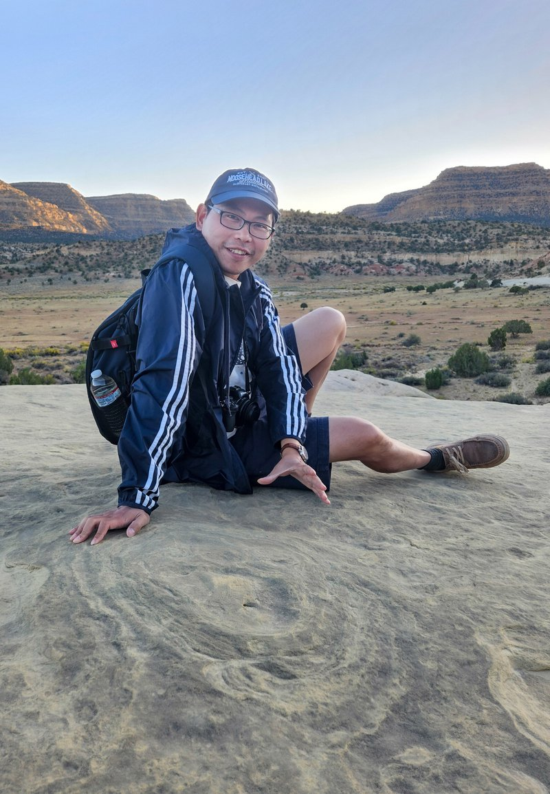
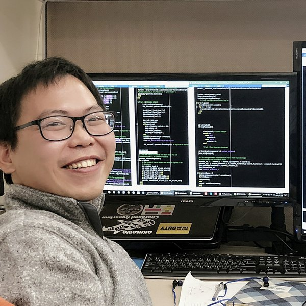
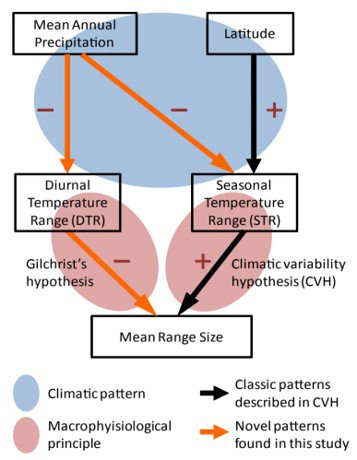
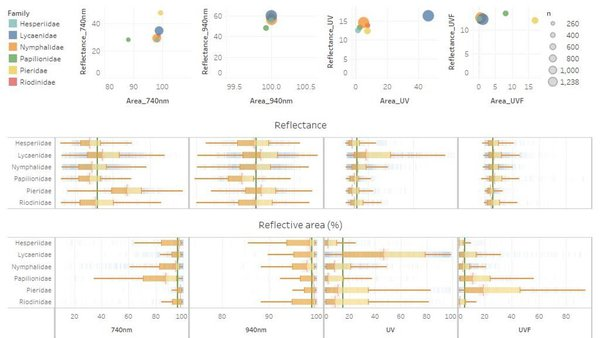
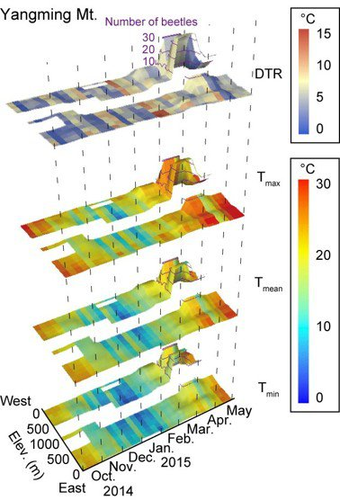
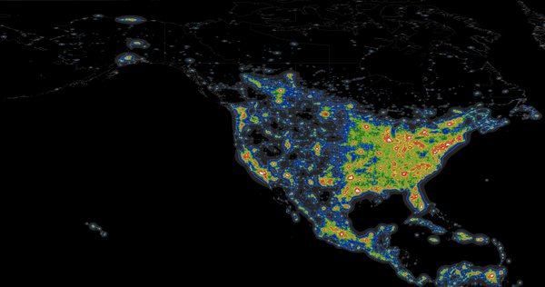
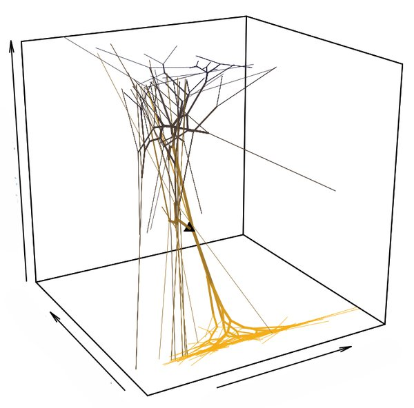
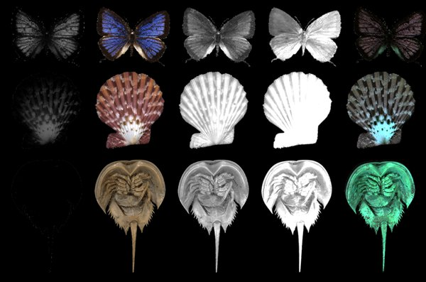
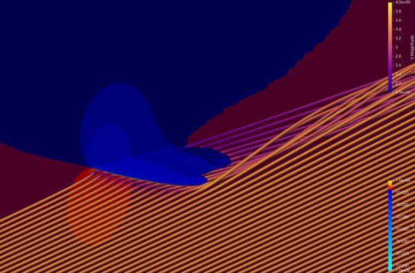

From Nature to Society
Exploratory Data Scientist · Interdisciplinary Researcher
I am a research scientist specializing in data science, AI, and computational modeling, with a strong focus on exploratory analysis, uncovering patterns, and developing theoretical insights. My interdisciplinary approach—integrating ecology, evolution, environmental science, and AI—has led to new discoveries and novel technologies.
My expertise includes digitization, spectral data analysis, insect flight mechanisms, and multi-modal AI applications. With over a decade of programming experience, I work extensively with spatiotemporal data, computer vision, and causal inference, building scalable analytical frameworks to drive scientific innovation and real-world applications.
Built a high-throughput multispectral imaging system that digitizes museum specimens across 11 wavelength channels, processing 940+ specimens in parallel.
Mapped climate velocities across 17,000+ mountain regions worldwide, revealing where species can and cannot keep pace with warming.
Disentangled evolutionary vs. environmental drivers of moth light-attraction decline using 130+ years of historical behavioral data.
Python, R, MATLAB, Spark, SQL. From signal processing of wing-beat frequencies to NLP pipelines analyzing how regional weather shapes news topics.
Quantified wing shape evolution across 12,000+ Lepidoptera species using deep learning and phylogenetic comparative methods.
Co-founded CropSky (agritech ML), PathoTracter (pathogen IoT), and the SOS Foundation, translating ecological insights into societal tools.

Programming

Data Analysis

Software & Tools

Research Methods
Geospatial & Environmental

Biological & Genetic

Visual & Spectral

Computational & Simulated

Research and creative projects spanning physical environments, species distribution, morphological quantification, and sustainable technology.
View Projects →An interactive map of the mentors, co-authors, and partners who have shaped my research across 6+ countries.
View Collaboration Map →Invited lectures, conference talks, and public science outreach on biodiversity, climate, and AI-driven research.
Talk recordings are being added — check back soon.
Founding Director
Sustainability Of Sustainability — Cambridge, MA, USA
Dec 2025 – Current
Leading the strategic vision and early development of an interdisciplinary nonprofit integrating science, art, and digital innovation to advance sustainability and public engagement.
Founder & CEO (Part-time)
BioNarr — Delaware, USA
May 2026 – Current
Developing integrated hardware and software systems for large-scale biodiversity intelligence and natural history digitization.
Associate
Department of Organismic and Evolutionary Biology (OEB), Harvard University — Cambridge, MA, USA
May 2026 – Current
Affiliated researcher in organismic and evolutionary biology, collaborating on interdisciplinary research and mentoring within the department.
Research Scientist
Museum of Comparative Zoology, Harvard University — Cambridge, MA, USA
May 2025 – May 2026
Developed AI-powered hardware and software to digitize museum specimens in 3D.
Postdoctoral Fellow
Roland Institute at Harvard, Harvard University — Cambridge, MA, USA
Jun 2023 – May 2025
Led the development of computer vision techniques and field experiments to investigate the impacts of artificial light at night (ALAN) on moth populations and behaviors.
Research Assistant
Biodiversity Research Center, Academia Sinica — Taipei, Taiwan
Aug 2011 – Jul 2016
Applied statistical modeling, causal inference, and spatiotemporal analysis to examine species distribution, biodiversity metrics, and environmental response.
Doctorate — Organismic and Evolutionary Biology
Harvard University — Cambridge, MA, USA
Thesis: Evolution and diversification of Lepidoptera · Advisor: Naomi E. Pierce
Award: Kao Fellowship (2018) & Peirce Fellowship (2017)
Aug 2017 – May 2023
Postgraduate Degree — Data Science and Management
Taipei Medical University — Taipei, Taiwan
Award: Academic Achievement Award (First Place)
Jul 2016 – Jul 2017
Master of Science — Forestry and Resource Conservation
National Taiwan University — Taipei, Taiwan
Thesis: Regional scale high resolution δ18O prediction in precipitation using MODIS EVI · Advisors: Hsiao-Wei Yuan & Sheng-Feng Shen
Sep 2009 – Jul 2011
Bachelor of Science — Forestry and Resource Conservation
National Taiwan University — Taipei, Taiwan
Sep 2005 – Jul 2009

Whether you're interested in academic or business collaborations, technology discussions, knowledge exchange, investment opportunities, or mentorship, I'd love to connect.
wpchanwork@gmail.com